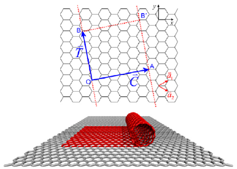
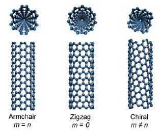

Single-wall carbon nanotubes (SWCNs) are cylindrical tubes of carbon atoms that can assume a wide range of atomic structures. Each structure is defined by two positive integers (n,m) called the chiral indices. The Nanotube Builder plugin generates SWCN structures of arbitrary length and chirality for the purpose of molecular simulations or nanoscience education. This plugin produces the unit cell of a SWCN by first generating coordinates of a rectangular graphene sheet with dimensions corresponding to the particular chiral indices specified by the user. These coordinates are then mapped onto a cylinder to generate the SWCN unit cell with its central axis aligned in the z-direction. The unit cell is then replicated along the z-axis to generate a SWCN of the desired length. The structure is loaded into VMD as a new molecule and contains the appropriate box dimensions for a SWCN periodic in the z-direction. Below are further details on SWCN structure.
 A SWCN can be thought of as a single sheet of graphite (graphene) rolled up into a seamless molecular cylinder (see figure on the right). C is the chiral vector and indicates the direction of the rolling. C extends from one carbon atom to a crystallographically equivalent atom on the graphene lattice. Thus, C can be written as a linear combination of the lattice basis vectors:
Here, n and m are positive integers known as the chiral indices. All physical properties of a given SWCN ultimately depend on these two numbers. SWCNs of different atomic structure result for various choices of n and m (see figure on the left). High symmetry armchair and zigzag SWCNs occur for m = n and m = 0, respectively.
 The length of C equals the circumference of the resulting SWCN. Thus, the SWCN diameter d is given by
Here, a = 2.49 Angstrom is the lattice constant of the graphene honeycomb lattice.
The translation vector T connects two equivalent carbon atoms along the SWCN axis and is given by
where gcd is the greatest common divisor function. The length of T gives the length of the SWCN unit cell and can be written as:
Nanotube Builder can be run from the VMD console via the command:
nanotube -l <length> -n <n> -m <m>
Note: because Nanotube Builder constructs SWCNs by first generating the unit cell, its actual length will be a multiple of the unit cell length determined by the chiral indices.
This plugin can also be run using a GUI located in VMD Extensions menu under Modeling/Nanotube Builder.